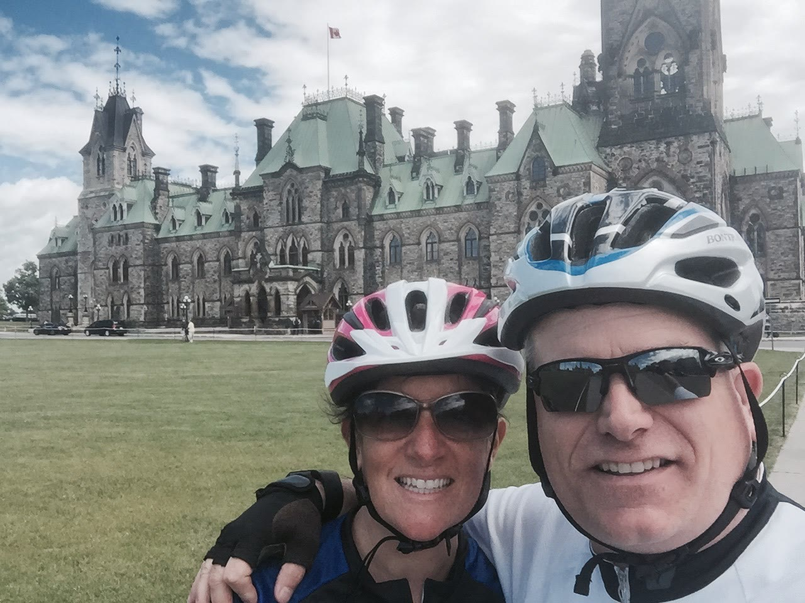
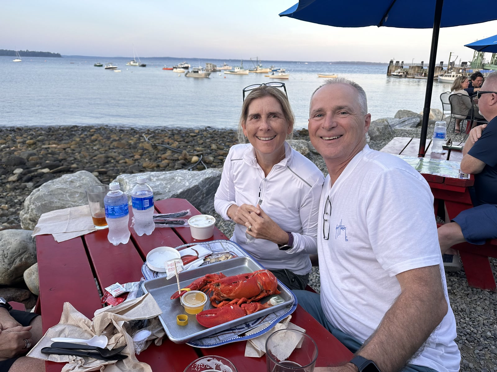
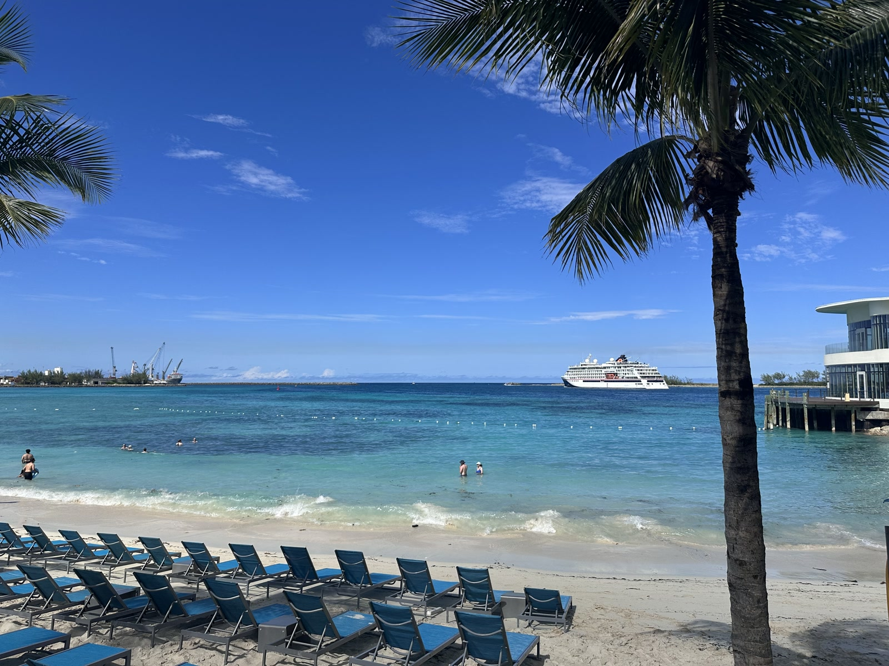

chuckthornton.com
Chuck Thornton
Photos from our travels—roads taken, places lingered, and moments we wanted to keep.
About
Sharing our journeys
We’re retired and spending more time on the road—and in the air— collecting memories instead of meetings. This little site is our scrapbook: pictures and notes from the places we’ve loved.
We’ve started with Québec and Ontario in 2016—visiting Aunt Mary Jo and Uncle Jack in Ottawa, with biking, boating, hiking, and the scenery of Eastern Canada—then Iceland in October 2018, Amsterdam in June 2023, Switzerland in July 2023, Maine and Acadia in late July 2023, a Bahamas cruise in November 2025, Prague and Vienna in March 2026, and Philadelphia and New York in August 2026. More journeys can join the scrapbook as we dig through the albums.
Destinations
Our trips
Québec and Ontario in 2016, Iceland in 2018, Amsterdam in June 2023, Switzerland in July 2023, Maine & Acadia in late July 2023, Bahamas Cruise in November 2025, Prague & Vienna in March 2026, and Philadelphia & New York in August 2026.
-

Quebec and Ontario · 2016
A visit with Aunt Mary Jo and Uncle Jack in their hometown of Ottawa—biking, boating, hiking, and soaking up the beautiful scenery of Eastern Canada.
-

Iceland · October 2018
Reykjanes coastlines, fishing boats at Garði, lighthouses in the wind, and rainbows stretching over the tundra—a few days we still talk about.
-

Amsterdam · June 2023
Houseboats and bike-lined quays, a quiet canal at dusk, the Anne Frank House door, and a sunny stop in front of De Nieuwe Kerk.
-

Switzerland · July 2023
A hiking trip through Switzerland—Zürich, Lucerne, Zermatt!, Geneva, and St. Moritz. We got properly lost on Mt. Pilatus, then luckily found our way back to Lucerne.
-

Maine and Acadia · July 2023
A late-July trip to Maine and Acadia National Park—Lincolnville and Camden on the coast, time in Boston, and a visit with Rick and Tracey Bryant.
-

Bahamas Cruise · November 2025
A cruise to the Bahamas—shipboard evenings under the moon, Nassau’s lighthouse and turquoise harbor, the Queen’s Staircase, Government House, and a sunny beach day with the ship on the horizon.
-

Prague and Vienna · March 2026
A spring trip through Prague and Vienna—friends at the Dancing House, Prague streets and landmarks, remembering the victims at the Terezín concentration camp memorial, and photos from Vienna.
-

Philadelphia and New York · August 2026
Chuck and Leslie’s trip to Philadelphia and New York—Independence Hall and the Rocky steps, Hamilton with Uncle Jack and cousins Lesley and Alison, walking the Brooklyn Bridge and the High Line, Central Park Zoo, and the American Museum of Natural History.
Photos
Quebec and Ontario · 2016
Ottawa with Aunt Mary Jo and Uncle Jack—biking by Parliament, Old Québec nights, and a stop at the falls. Click any image for a closer look.
Photos
Iceland · October 2018
Photos from Iceland (Oct 2018). Click any image for a closer look.
Photos
Amsterdam · June 2023
Canals, houseboats, the Anne Frank House, and a few selfies along the way. Click any image for a closer look.
Photos
Switzerland · July 2023
Lucerne’s Chapel Bridge, Zermatt and the Matterhorn, the Glacier Express, and the Mt. Pilatus hike that got us lost (and back). Click any image for a closer look.
Photos
Maine and Acadia · July 2023
Lincolnville, Camden, and Boston in late July—a visit with Rick and Tracey Bryant. Click any image for a closer look.
Photos
Bahamas Cruise · November 2025
Shipboard nights, Nassau harbor and landmarks, and a sunny beach day. Click any image for a closer look.
Photos
Prague and Vienna · March 2026
Prague so far—the Dancing House with friends, plus photos from the bridges, Old Town, and the station. Below: the Terezín Concentration Camp (Theresienstadt), a former Nazi concentration camp—photos shared in remembrance. Plus photos from our days in Vienna.
Terezín Memorial
Terezín (Theresienstadt) was a Nazi concentration camp and ghetto. These photos are from the memorial site—shared with respect for those who suffered and died there.
Vienna
Photos
Philadelphia and New York · August 2026
Philadelphia landmarks and New York days with family—Hamilton with Uncle Jack, cousins Lesley and Alison, the Brooklyn Bridge and High Line, Central Park Zoo, and the Museum of Natural History. Click any image for a closer look.
Say hello
Stay in touch
Questions, travel tips, or just a friendly note—feel free to email.